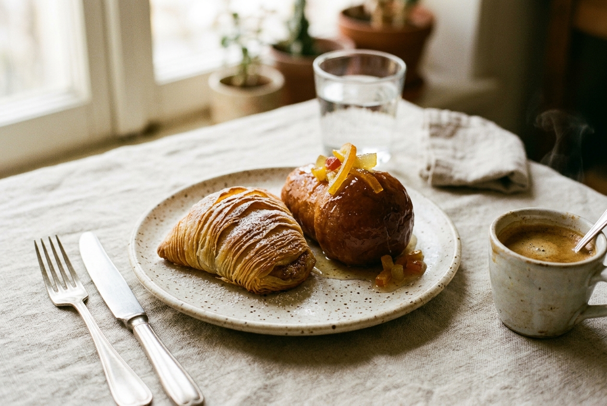
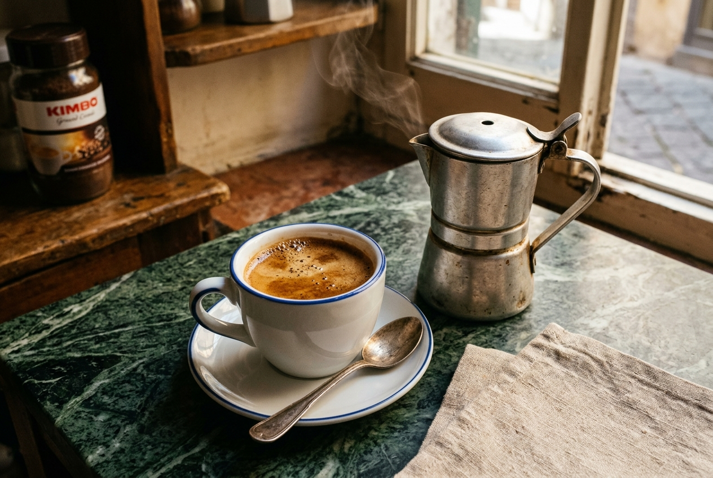
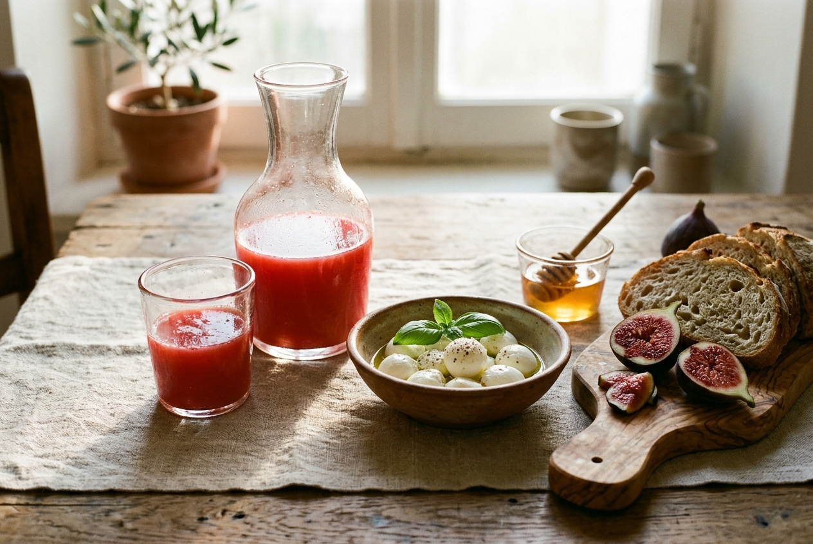

Autenticità a tavola
Un risveglio che profuma di vaniglia, agrumi e caffè fumante.
A Napoli la colazione non è una formalità veloce: è un rito sacro, un momento di piacere che detta il ritmo dell'intera giornata. Al B&B Vomero selezioniamo ogni mattina il meglio della tradizione dolciaria partenopea dai maestri fornai e pasticceri storici del quartiere.
Sfogliatelle ricce croccanti e frolle morbide al profumo di cannella, torta caprese al cioccolato e mandorle, pane a lievitazione naturale con burro di fattoria campana e marmellate artigianali di fichi e agrumi vesuviani.

I Dolci di Tradizione
Sfogliatelle calde ritirate all'alba, babà al rum, cornetti artigianali farciti al pistacchio di Bronte e crema pasticcera profumata al limone di Sorrento.

L'Arte del Caffè
Espresso napoletano cremoso estratto a regola d'arte, caffè con la classica cuccumella napoletana, cappuccini schiumati al momento e selezioni di tè in foglia pregiati.

Fresco, Salato & Bio
Spremute fresche di arance siciliane, frutta fresca di stagione, formaggi freschi campani, focaccia calda e opzioni dedicate senza glutine o vegane su richiesta.
La Tua Mattina
Orari rilassati, servizio su misura.
La colazione viene servita ogni mattina dalle 08:00 alle 10:30 nel luminoso salone comune o, su richiesta preventiva, direttamente nella quiete della vostra camera o suite.